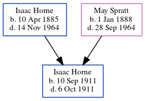

Isaac George Horne 1911 - 1911
[ Home ] | [ Calendar ] | [ Surnames Index ] | [ Census Index ] | [ Family History ]The eldest of 7 children of Isaac Horne (a hay trusser & thatcher heavy worker market gardener) and May Spratt, Isaac Horne, the uncle of Nigel Horne, was born in Thanet, Kent, England on Sep 10, 19111,2,3 and baptized in St Lawrence, Thanet, Kent, England on Sep 23, 1911.
He died on Oct 6, 1911 at 4 Newington Terrace, St Lawrence in Thanet2 and was buried there on Oct 10, 19114.
Parents
- Isaac was born on Apr 10, 1885
- May was born on Jan 1, 1888
Citations
- England & Wales births 1837-2006 - Findmypast
- England & Wales, FreeBMD Death Index: 1837-1915 Online publication - Provo, UT, USA: The Generations Network, Inc., 2006.Original data - General Register Office. England and Wales Civil Registration Indexes. London, England: General Register Office. © Crown copyright. Published by permission of the Cont
- Other
- Freereg
Media
England & Wales deaths 1837-2007 - BMD/D/1911/4/AZ/000382/033
England & Wales births 1837-2006 - BMD/B/1911/4/AZ/000639/090
Kent, Canterbury Archdeaconry baptisms 1538-1912 - GBPRS/CANT/B/96407164
Family Tree
Generated by ged2site. Last updated on Jun 11, 2024